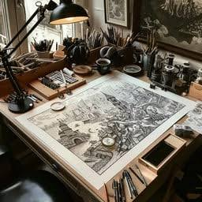

Welcome to the World of Drawing Materials

Every compelling piece of visual art begins with a single deliberate mark. Whether you are creating swift gesture thumbnails in a pocket sketchbook or rendering intricate architectural cross-sections, the physical characteristics of your drawing materials fundamentally shape your artistic expression.
Traditional drawing tools bridge the gap between creative thought and physical tangible form. The resistance of graphite across a textured sheet, the velvety depth of pure willow charcoal, and the crisp, permanent black line of archival pigment ink each provide unique mechanical properties and visual qualities.
Selecting appropriate supplies does not require excessive expense; rather, it demands an understanding of how distinct mediums interact with varying paper fibers, surface textures, and blending tools. By mastering hardness gradations, paper weights, and studio ergonomics, draftsmen of every discipline can achieve greater confidence and tonal control.
Essential Drawing Studio Disciplines:
- Tonal Control: Mastering value gradations from pure white highlights to deepest matte shadows.
- Surface Chemistry: Choosing between plate-smooth Bristol boards and toothy cold-pressed cotton rag.
- Line Sensitivity: Utilizing flexible metal dip nibs and technical fineliners for expressive contour work.
- Preservation & Care: Employing kneaded erasers, workable fixatives, and archival acid-free storage.